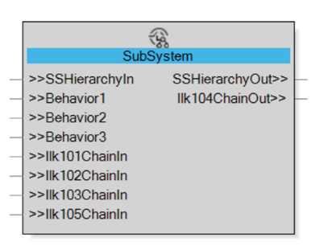

A sub-system is a functional aggregation of different elements of a plant, organized together to execute a certain purpose like one or more functional behaviors.
The sub-systems are represented in EcoStruxure Automation Expert by CATs (implemented as Composite or SubApp).
Each sub-system can be:
Child of another sub-system: If it is functionally contained in the higher-level sub-system.
Parent of another sub-system: If it functionally contains one or more lower-level sub-systems.
Additionally, the sub-system CAT should have:
One Input Adapter and one Output Adapter to manage hierarchical relationship with other sub-systems.
One or more Input Adapters to allow bidirectional access to its functional behaviors.
One or more Input Adapters or Output Adapters to manage interlocks relationships with other sub-systems.
